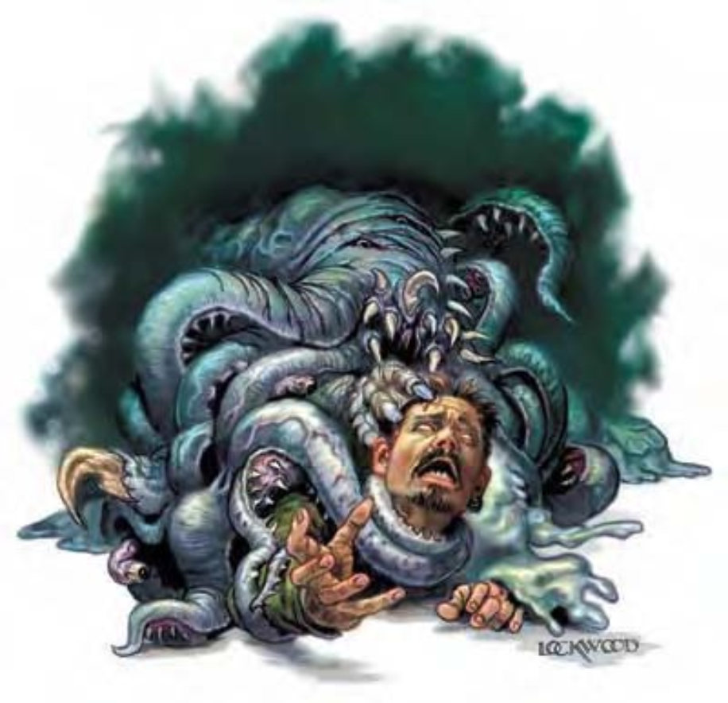

污秽恐怖，没有固定形体。你面前的生物不断溶解又重塑，幻化成人类恶梦中的各个骇人模样。混乱地转变数十种形体后，该生物化成覆满黏液的球体，十只眼睛游移其上，周围环绕一圈开阔的大嘴。
恐怖的混沌兽外型可以不断变化。其致命触碰可让对手溶为一滩黏液。没人能弄清混沌兽的外型。前一秒他可能是恐怖的巨大勾爪，血肉模糊，血管暴露；后一秒可能是一团软泥，不停滑动的未红色触手；再来则是肌肉纠结的毛茸茸强壮怪物。混沌兽的大小不定，但约200磅重。混沌兽不会说话。
| 资料栏位 | 混沌兽 (Chaos Beast) 中型异界生物 (混乱, 跨位面) |
|---|---|
| 生命骰 | 8d8+8 (44hp) |
| 先攻 | +5 |
| 速度 | 20英尺 (4格) |
| 防御等级 | 16 (+1敏捷, +5天生)、接触11、措手不及15 |
| 基本攻击/擒抱 | +8/+10 |
| 攻击 | 爪抓+10近战 (1d3+2 外加形体虚化) |
| 全力攻击 | 2 爪抓+10 近战 (1d3+2 外加形体虚化) |
| 占据/触及 | 5英尺 / 5英尺 |
| 特殊攻击 | 形体无常 |
| 特殊能力 | 黑暗视觉60 尺，对重击及变形 transformation 免疫，法术抗力15 |
| 豁免 | 强韧+7，反射+7，意志+6 |
| 属性 | 力量14，敏捷13，体质13，智力10，感知10，魅力10 |
| 技能 | 攀爬+13，脱逃+12，躲藏+12，跳跃+9，聆听+11，搜索+11，侦察+11，生存+0 (追踪时+2)，翻滚+14，绳技+1 (捆绑时+3) |
| 专长 | 闪避，精通先攻，灵活移动 |
| 区域 | 混沌海 |
| 组织 | 单独 |
| 挑战级数 | 7 |
| 宝物 | 无 |
| 阵营 | 总是混乱中立 |
| 进化 | 9-12HD (中型) ; 13-24HD (大型) |
| 等级调整 | ― |
像这样得以变化成任意形态的生物能够拥有多少种不同的攻击形式？以混沌兽而言，答案是两种。混沌兽虽然可以变成各种不同的骇人外表，拥有爪子、毒牙、螯钳、触须或者尖刺，但它能造成的物理伤害很有限。无论采用哪种形体，该生物每轮显然无法掌握2次以上的攻击。它的持续变形阻碍了协调系统做出更多的动作。对抗伤害减免时，混沌兽的爪子以及它所持有的任何武器，都被视为具有混乱阵营。
形体无常 (Corporeal Instability, Su)：被混沌兽的攻击击中的活生物会产生可怕的变形。该生物必须通过DC15的强韧豁免，否则将变成海绵状的不定形体。除非通过意志动作加以控制（见下文），否则受害者的形状会开始融化、流动、扭曲或者沸腾。该豁免DC基于体质调整值。受到影响的生物无法携带或使用任何物品。衣服，盔甲，戒指和头盔变得毫无用处。携带或穿戴的大型物品――盔甲，背包，甚至衬衫――都弊大于利，并最终导致受害者的敏捷降低4点。变得柔软或者畸形的腿脚会把速度降低到10英尺或正常速度的四分之一之中的较低值。极为强烈的刺痛感贯穿整个神经系统，导致受害者无法前后一致的行动。受害者不能施法或者使用魔法物品，而且会盲目地攻击，无法分辨敌友（无论攻击检定如何，攻击检定都将获得-4减值以及50%的失手率）。受害者处于不定形体的每一轮，都会因心灵受创而收到1点感知吸取。如果受害者的感知值降到0，它自己也会变成混沌兽。受害者可以通过一个标准动作来进行一次DC15的魅力检定来恢复原有的形体（该检定DC不随混沌兽的生命骰或是属性变动）。如果成功，它可以恢复原有形体1分钟。如果失败，受害者可以在后续的每一轮中继续这个检定直到成功。虚化形体既不是疾病也不是诅咒所以它很难被移除。形体变化 shapechange 或者石肤术 stoneskin 不会治愈受影响的生物，可以在法术持续时间内固定它的形体。复原术 restoration，医疗术 heal 及高级复原术 greater restoration 可以移除这异常状态（受到吸取的感知数值需要一次额外的复原术来回复）。
免疫变形 (Immunity to Transformation, Ex)：没有任何凡人法术能够影响或固定混沌兽的形体。变形或者石化的效果可迫使它变成一种新的形体，但是在混沌兽的下一轮一开始，它就会用一个自由动作立刻回复到形体不断变化的状态。